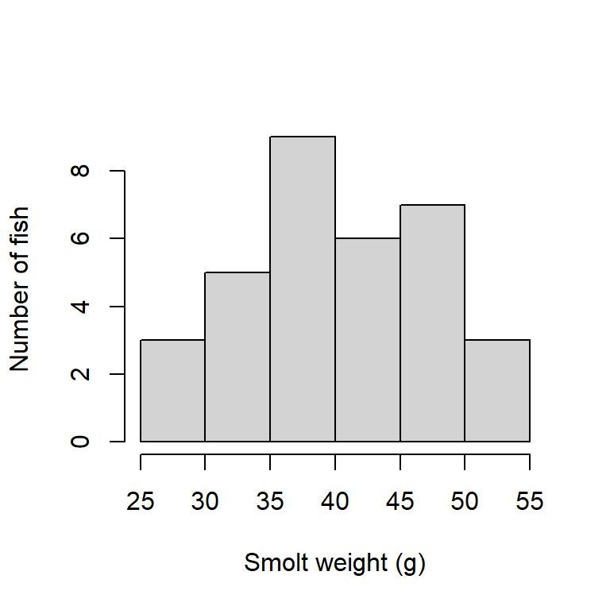
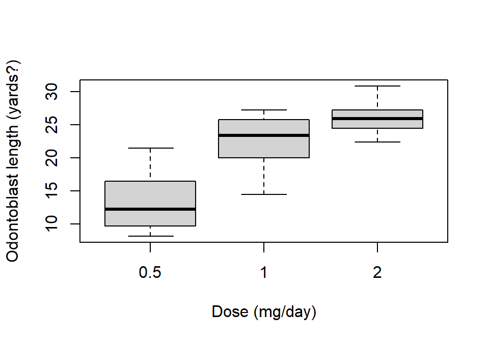
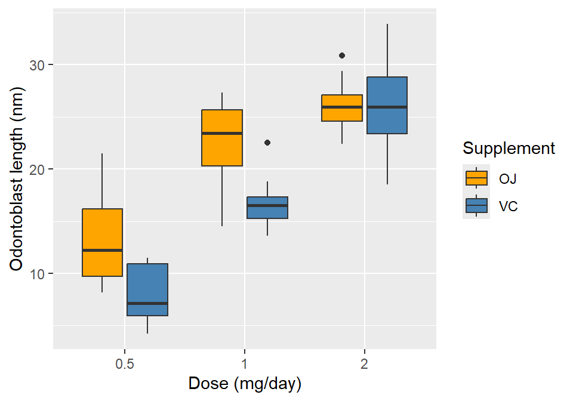
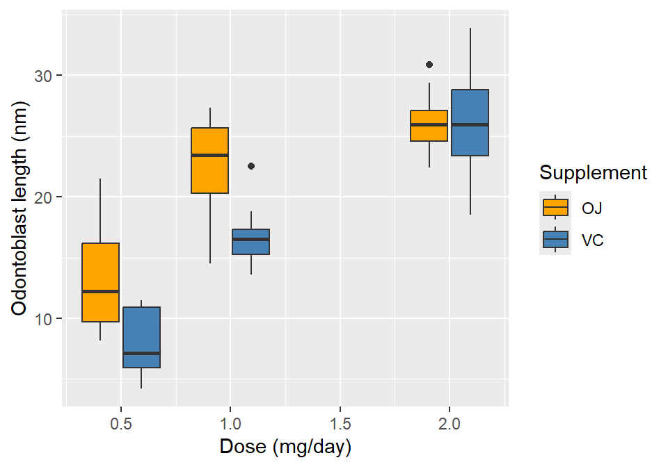
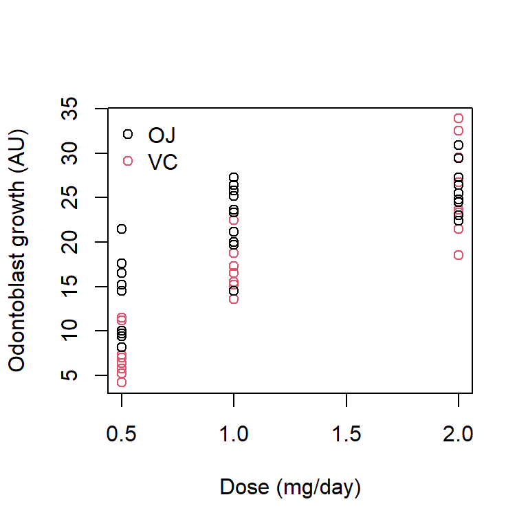
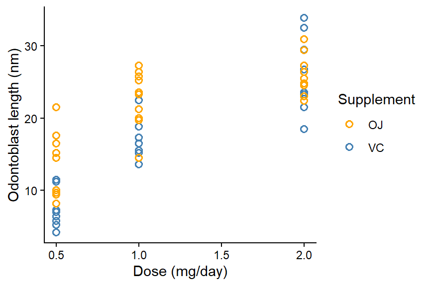

. 1 Problem Set
Please render this file to .html and submit via Brightspace.
R Basics
Data types
Create a vector called site_num with the values 1 through 10.
Data munging
The SmoltWeights sheet from H2DS_practicalData.xlsx contains the weight in grams (column weight_g) from a sample of 34 wild salmon smolts (column fish_id) during their outmigration from a river to the ocean. Load the dataset and perform basic summaries (range, mean, median, number of missing values for each column). Identify (using code) which fish are missing values for weight_g.
Load and check data
tibble [34 × 2] (S3: tbl_df/tbl/data.frame)
$ fish_id : num [1:34] 1 2 3 4 5 6 7 8 9 10 ...
$ weight_g: num [1:34] 44.2 40.2 39.7 36 40.9 33.8 51.2 41.1 36.7 37.2 ...Load and check data
summary(smolt_df) fish_id weight_g
Min. : 1.00 Min. :26.60
1st Qu.: 9.25 1st Qu.:36.00
Median :17.50 Median :39.70
Mean :17.50 Mean :40.17
3rd Qu.:25.75 3rd Qu.:46.10
Max. :34.00 Max. :51.20
NA's :1 There are many ways to identify the row with missing data.
Method 2: Extract the row from the data.frame
smolt_df[is.na(smolt_df$weight_g),] # gives the row from the data.frame# A tibble: 1 × 2
fish_id weight_g
<dbl> <dbl>
1 12 NACreate a new column called weight_lb that gives the weights in pounds, where 1 kg = 2.205 lb.
Calculate new column
smolt_df$weight_lb <- smolt_df$weight_g / 1000 * 05What proportion of fish weigh less than 0.2 lb? How many fish is this?
Create a new data.frame called large_df that contains only the fish as large or larger than the median weight and excludes rows with missing weights.
# A tibble: 17 × 3
fish_id weight_g weight_lb
<dbl> <dbl> <dbl>
1 1 44.2 0.221
2 2 40.2 0.201
3 3 39.7 0.199
4 5 40.9 0.204
5 7 51.2 0.256
6 8 41.1 0.206
7 17 46.7 0.234
8 20 46.1 0.230
9 21 50.9 0.254
10 22 45.7 0.229
11 23 46.8 0.234
12 24 50.5 0.252
13 25 46.7 0.234
14 29 41.8 0.209
15 32 41.5 0.208
16 33 47.3 0.236
17 34 48.9 0.244Create a new data.frame called extreme_df that contains only fish more than 1.5 standard deviations greater than the mean and excludes rows with missing weights.
# A tibble: 6 × 3
fish_id weight_g weight_lb
<dbl> <dbl> <dbl>
1 7 51.2 0.256
2 16 26.6 0.133
3 19 28.2 0.141
4 21 50.9 0.254
5 24 50.5 0.252
6 26 27.9 0.139Plotting
Histograms
Create a histogram of the smolt weights, labelling the axes and omitting a plot title. Add a figure legend using #| fig-cap: "..." in the quarto document code block. Add #| label: fig-smoltHist, and then in text below, reference the figure by typing @fig-smoltHist.
When rendered, @fig-smoltHist in the text is automatically replaced by “Figure 1”, with figure numbers updated automatically. Adding a legend with #| fig-cap: "..." in your code block will automatically give that figure a number, making your life easier.
The label must start with fig- for this to work.
Note that you cannot re-use the same label.
Here is some text referencing Figure 1 by using the label I’ve used in the code chunk (@fig-smoltHist).
Code chunk
```{r}
#| code-fold: true
#| code-summary: "Code chunk"
#| label: fig-smoltHist
#| fig-cap: "Histogram of smolt weights."
#| fig-width: 4
#| fig-height: 4
hist(smolt_df$weight_g,
main=NULL,
xlab="Smolt weight (g)",
ylab="Number of fish")
```
Line plots
The dataset beaver1 is available in R, giving the body temperature through time of a female beaver (Castor canadensis), with observations every 10 minutes.
str(beaver1)'data.frame': 114 obs. of 4 variables:
$ day : num 346 346 346 346 346 346 346 346 346 346 ...
$ time : num 840 850 900 910 920 930 940 950 1000 1010 ...
$ temp : num 36.3 36.3 36.4 36.4 36.5 ...
$ activ: num 0 0 0 0 0 0 0 0 0 0 ...Debug the following code so that it produces a line plot of body temperature by observation id. Note that time is given in the form 0330 for 3:30am (?beaver1). The obs_id column thus gives the ordered observations from first to last.
As an added challenge, add vertical dashed lines indicating when the beaver was active.
Set #| eval: true to run the code when you click Render. If you’ve successfully debugged, you should then see your plot.
Original:
Corrected:
Boxplots
The dataset ToothGrowth is available in R, giving the length (len) of tooth-growth cells (odontoblasts) in 60 guinea pigs under different vitamin C regimes (supp: OJ=orange juice, VC=ascorbic acid; dose: 0.5, 1, 2 mg/day). Create a boxplot of the length by dose for only the guinea pigs receiving orange juice. Write a figure caption and add a label as above.
Using base R
```{r}
#| code-fold: true
#| code-summary: "Using base R"
#| label: fig-OJ_lenByDose
#| fig-cap: "Odontoblast length by dosage in guinea pigs receiving orange juice."
#| fig-width: 5
#| fig-height: 3.5
boxplot(len ~ dose, data=ToothGrowth[ToothGrowth$supp=="OJ",],
xlab="Dose (mg/day)",
ylab="Odontoblast length (yards?)")
```
Use ggplot() to make the same boxplot, but with supp as the fill colour.
Remember to check the column types first!
Check data.frame structure
str(ToothGrowth)'data.frame': 60 obs. of 3 variables:
$ len : num 4.2 11.5 7.3 5.8 6.4 10 11.2 11.2 5.2 7 ...
$ supp: Factor w/ 2 levels "OJ","VC": 2 2 2 2 2 2 2 2 2 2 ...
$ dose: num 0.5 0.5 0.5 0.5 0.5 0.5 0.5 0.5 0.5 0.5 ...Since dose is numeric, there are two options to produce different boxes for each combination of dose and supp.
Method 1: Coerce dose to a factor
```{r}
#| code-fold: true
#| code-summary: "Method 1: Coerce `dose` to a factor"
#| label: fig-lenByDose_gg1
#| fig-cap: "Odontoblast length by dosage and supplement type in guinea pigs."
#| fig-width: 5
#| fig-height: 3.5
ggplot(ToothGrowth, aes(factor(dose), len, fill=supp)) +
geom_boxplot() +
scale_fill_manual("Supplement", values=c("orange", "steelblue")) +
labs(x="Dose (mg/day)",
y="Odontoblast length (nm)")
```
Method 2: Specify group=
```{r}
#| code-fold: true
#| code-summary: "Method 2: Specify `group=`"
#| label: fig-lenByDose_gg2
#| fig-cap: "Odontoblast length by dosage and supplement type in guinea pigs."
#| fig-width: 5
#| fig-height: 3.5
ggplot(ToothGrowth, aes(dose, len, fill=supp, group=paste(dose, supp))) +
geom_boxplot() +
scale_fill_manual("Supplement", values=c("orange", "steelblue")) +
labs(x="Dose (mg/day)",
y="Odontoblast length (nm)")
```
What are the benefits and downsides of each method? When might you choose one or the other?
Scatter plots
Using the same ToothGrowth dataset, produce a scatter plot of odontoblast length as a function of dose, where supp is the point colour.
Since supp is a factor, the levels can be coded into colours automatically in plot().
Using base R
```{r}
#| code-fold: true
#| code-summary: "Using base R"
#| label: fig-lenByDose_baseRScatter
#| fig-cap: "Odontoblast length by dosage and supplement type in guinea pigs."
#| fig-width: 4
#| fig-height: 4
plot(len ~ dose, data=ToothGrowth, col=supp,
xlab="Dose (mg/day)",
ylab="Odontoblast growth (AU)")
legend("topleft",
legend=levels(ToothGrowth$supp),
col=1:2,
pch=1,
bty="n")
```
In my opinion, it is easier to use ggplot as your figures get more involved.
Using ggplot
```{r}
#| code-fold: true
#| code-summary: "Using ggplot"
#| label: fig-lenByDose_ggScatter
#| fig-cap: "Odontoblast length by dosage and supplement type in guinea pigs."
#| fig-width: 4.5
#| fig-height: 3
ggplot(ToothGrowth, aes(dose, len, colour=supp)) +
geom_point(shape=1, size=2, stroke=0.8) +
scale_colour_manual("Supplement", values=c("orange", "steelblue")) +
labs(x="Dose (mg/day)",
y="Odontoblast length (nm)") +
theme_classic()
```